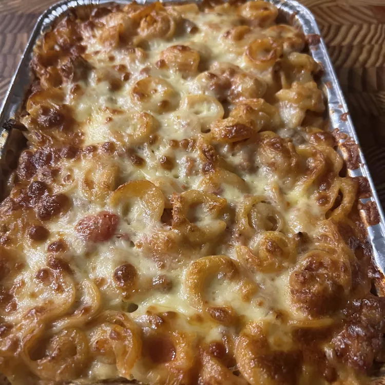

Nicole's Baked Ziti

For Sunday suppers, team dinners, or dinner drop-offs for a friend in need, this crowd-pleasing baked ziti with sausage is hearty, rich, and flavorful. Perfectly baked pasta absorbs flavor from the tangy tomato sauce, contrasting beautifully with the creamy ricotta mixture. This budget-friendly meal tastes like you spent all day making it! Serve alongside crusty bread, an Italian salad, and a glass of red wine.
Ingredients
- 1 tablespoon kosher salt
- 1 (16 ounce) package ziti pasta
- ¾ pound ground Italian sausage
- ¾ pound ground sirloin
- 1 small onion, finely chopped
- 2 cloves garlic, minced
- 1 teaspoon kosher salt, divided
- ¾ teaspoon ground pepper, divided
- ¼ teaspoon crushed red pepper flakes
- 2 (24 ounce) jars marinara sauce
- ½ cup water
- 1 (15 ounce) container whole milk ricotta cheese
- ¾ cup grated Parmesan cheese, divided
- 1 large egg
- 1 tablespoon chopped fresh Italian parsley
- 1 tablespoon chopped fresh basil
- 1 ½ (8 ounce) packages mozzarella cheese, shredded
Steps
- Preheat the oven to 375 degrees F (190 degrees C). Lightly grease a 9x13-inch baking dish.
- Bring a large pot of water to a boil. Add 1 tablespoon kosher salt to the boiling water and stir in pasta. Cook until just about tender to the bite, about 8 minutes (or 1 to 2 minutes less than package instructions).
- At the same time, heat a large, deep skillet or saucepan over medium-high heat. Add sausage and beef and cook, crumbling with the back of a spoon, until browned, about 5 minutes. Add onion, garlic, 3/4 teaspoon salt, 1/2 teaspoon pepper, and pepper flakes; cook until onion is translucent and softened, 3 to 5 minutes.
- Drain pasta and return to the pot. Add about 1/2 cup marinara; toss to coat and let sit until needed.
- Add remaining marinara sauce to the browned meat mixture. Pour 1/4 cup water into each jar, shake to release any leftover sauce in the jar, and pour into the skillet. Stir and bring to a simmer. Reduce heat to medium-low and cook, stirring occasionally, for 10 minutes.
- Stir ricotta cheese, 1/2 cup Parmesan cheese, egg, parsley, basil, and remaining 1/4 teaspoon each salt and pepper together in a bowl.
- Add 2 cups meat sauce to the pasta; toss to coat.
- Spread 1/2 cup meat sauce into the bottom of the prepared baking dish. Add ½ of the pasta mixture and top with 2 cups meat sauce. Lightly dollop and spread ricotta mixture over the top and sprinkle evenly with 1 1/2 cups mozzarella cheese. Add remaining pasta mixture, remaining meat sauce, and remaining mozzarella on top. Sprinkle evenly with remaining 1/4 cup Parmesan.
- Bake in the preheated oven until golden and bubbly, 25 to 30 minutes. Let stand 10 minutes before serving.